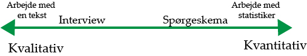

Kvantitativ og kvalitativ metode
Kvantiative undersøgelser
Det der kendetegner en kvantitative undersøgelse, er det oftes ses som et spørgeskema, som bruges til at samle statistiker og informationer. Det vil sige, som man f.eks. kan se på billedet nedenunder, at man kan kun svare 1-5. Det gør, at det er meget hurtigere og nemmer at undersøg svarede. Ved at bruge denne metode, kan resultere hvis via diagrammer. Min mening er søjlediagram det bedste til at hvis det, især hvis man har andre resultere man ska sammenligne med, f.eks. fra året før.
Der er både svagheder og styrke ved denne metode.
Styrker
Det gode ved denne metode, er at man kan undersøge lige hvad man vil. Man kan lave dem brede men man kan også skær det ind til benene. Ved allerede at havde lavet valgmuligheder som svar, slipper man for at havde en masse overskydende svar.
Svagheder
Som der er gode ting, er der også dårlig ting, altså svagheder ved denne metode. Det kan f.eks. være at dem man interviewerne ikke svare ærligt på spørgeskemaet, det kan forekomme af flere grunde med det største grund, er at de at de ikke gider at lave den.
Jeg kan komme med et eksempel fra mit tidligere arbejde, jeg arbejdende som interviewer fra Megafon. Mine primære opgaver var at tage rundt med busserne og interview. Jeg blev mødt af mange forskellige meninger, både omkring selve interview og indholdet i den. Jeg fandt ud af det kommer også meget an på hvor langt spørgeskemaet er, den jeg havde med at gøre, var 6 sider med cirka 10 punkter/spørgsmål på hver side. Det var svært for ”kunderne” at forholde sige til at svare i tal, de havde en mening, men de kunne ikke finde ud af hvor/hvilket tal det lå.
Kvalitative undersøgelser
Det der kendetegner en kvalitative undersøgelse, ses ofte er som et interview, hvor intervieweren har forberedt nogle spørgsmål. Det kan f.eks. være et jobinterview, hvor intervieweren har forberedt nogle spørgsmål omkring personen og jobbet.
Når denne metode skal analyseres, kigger de på svarede, beskær alt den overskuende information væk (altså alt det de ikke skal bruge til noget). De ren skriver det og stiller det op og kigger alle svarede igennem ind.
Styrker
Fordele ved den kvalitative metode, er at det giver fyldige svare, man for hurtigere en dybere forståelse for den målgruppe man undersøger. Det kan give en mulighed for at få ny og mere viden og større indsigt i verden omkring en.
Svagheder
Ulemper er så at det hurtigt kan være tidkrævende, da der hurtigt kan komme flere informationer end hvad man skal bruge. Man er også afhængig af undersøgerens færdigheder og forforståelse, for at være sikker på at man for de svar man kan bruge.
Kilder: Mit hoved, da jeg har arbejdet med det. Og har haft salg og service da jeg gik på handelsskolen for mange år siden på Aalborg Handelsskole.